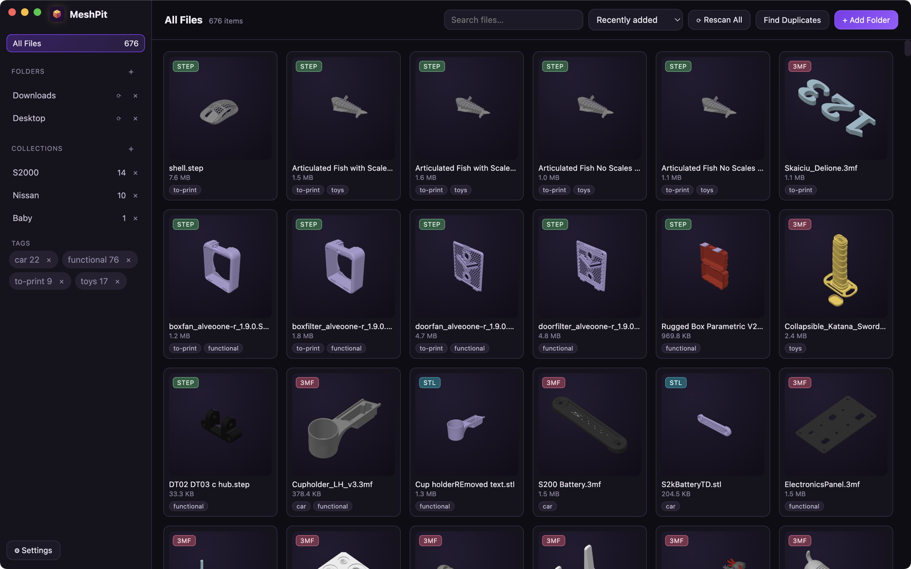
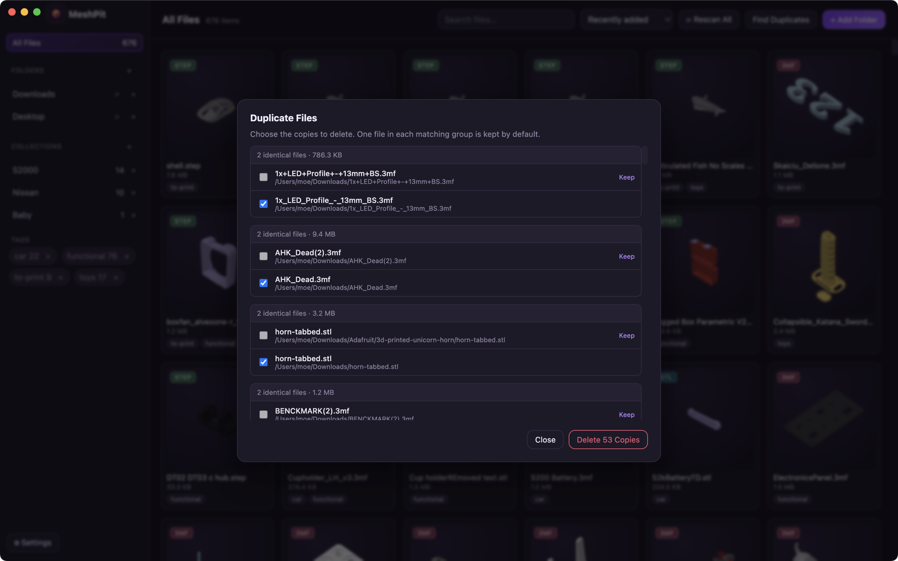
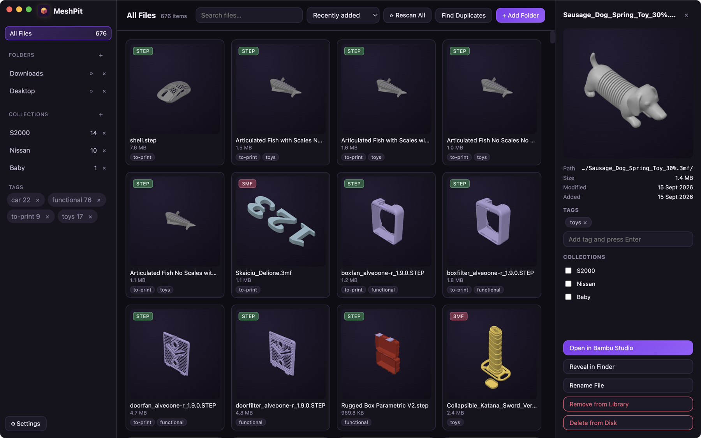
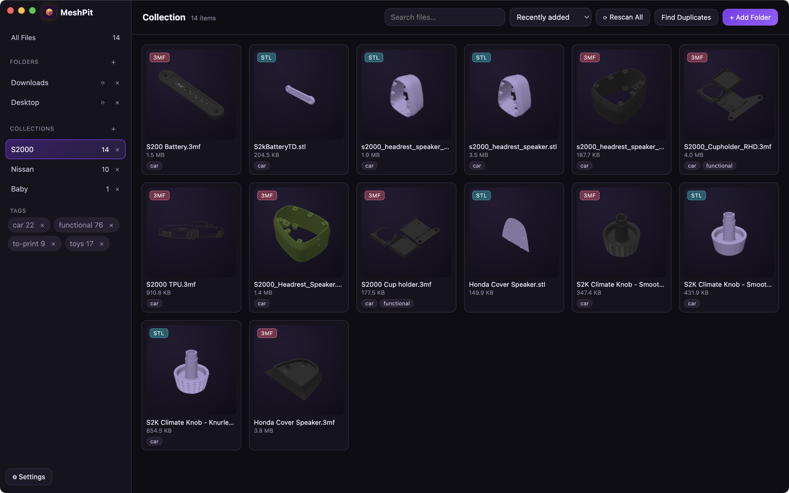

01 / INDEX
Searchable gallery
Index chosen folders in the background and scan a grid of generated 3D previews instead of filenames alone.
MeshPit is a local library for every 3D-printable file on your machine. Point it at a folder, walk away, and come back to a searchable, thumbnailed gallery — nothing imported, copied or moved.
macOS · Windows · Linux · Free & open source

A few hundred downloads later your models are scattered across Downloads,
half of them are called files.stl, and the only way to find the one you
want is to open them in a slicer one at a time.
MeshPit indexes your models where they already live. It walks the folders you choose, renders a preview of every model it finds, and puts the whole lot behind a search box.
No import step, no managed library folder, no copies eating your disk. Your folder structure stays exactly as it is — MeshPit only keeps an index alongside it, and deleting that index leaves every file untouched.
Index chosen folders in the background and scan a grid of generated 3D previews instead of filenames alone.
Every STL, OBJ, 3MF and STEP is rendered to a thumbnail — including the full-colour plate preview your slicer embedded in a 3MF.
Filter 10,000 files by name as you type, then sort by name, size, date added or date modified.
Freeform tags for “articulated”, “gift”, “petg”; collections for the projects you are actually building.
Byte-for-byte duplicate detection via SHA-256, with the redundant copies pre-selected for a one-click cleanup.
Double-click any model to open it in Bambu Studio — or whatever your system opens it with by default.
Here is what MeshPit is doing while you don’t — four stages, all of them off the interface thread, so a 10,000-file scan never costs you a frame.
Adding a folder spawns a dedicated worker thread to walk it recursively. The walk never touches the interface, and it deliberately plays nice with the rest of your machine.
node_modules are skippedEach file found becomes a row in a local database in WAL mode, so reads never block the scan. Rows are keyed on absolute path, which makes rescanning idempotent — a folder you have scanned a hundred times produces the same index every time.
Pending thumbnails are queued and rendered one at a time in a hidden offscreen window, so GPU work can’t stutter the gallery you’re scrolling. Resolution is configurable at 160, 320 or 512 pixels.
A file watcher keeps the index honest as your folders change underneath it, so the gallery reflects the disk without you asking it to.
| A file appears in a watched folder | Picked up live and indexed immediately |
| A file is modified | Size and mtime update; the thumbnail re-renders |
| A file is deleted or moved away | Dropped from the index |
| A file has vanished since the last scan | Flagged missing and hidden — tags and collections are kept in case the drive comes back |
| You hit Rescan All | Every watched folder is re-walked from scratch |
A two-pass check, so it stays fast even on a library of tens of thousands of files.
You get one group per set of identical files, the first copy marked Keep and the rest pre-ticked — so clearing out 53 redundant copies is a single click.



There is no account, no sync service and no telemetry. MeshPit’s entire state is one database file plus a folder of cached thumbnails. Delete it and you are back to a clean install, with every model still exactly where it was.
| Platform | State lives in |
|---|---|
| macOS | ~/Library/Application Support/MeshPit/ |
| Windows | %APPDATA%\MeshPit\ |
| Linux | ~/.config/MeshPit/ |
Download the latest release, point it at a folder, and let MeshPit build your visual index while you get on with something else.
Get the latest release